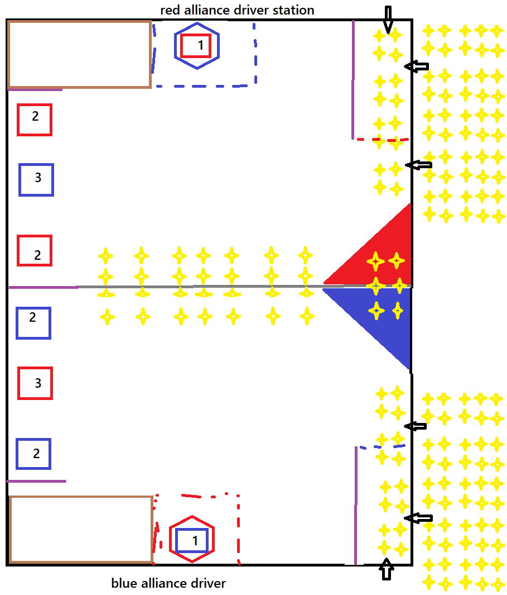

Steampunk SKYFORGE
1 Introduction & conventions
1.1 Units, tolerances and coordinates
- Dimensions are in inches with millimetres in parentheses. FIELD dimensions are nominal, ±1 in. (±25 mm) unless noted; teams should design for this variation, as in real FRC events.
- Coordinate system (used throughout, Figure 4-1): origin O is the carpet-level corner where the red ALLIANCE WALL meets the GOAL-SIDE FIELD BORDER. +X runs across the FIELD toward the FEEDER-SIDE border (0 → 324 in.). +Y runs along the FIELD toward the blue ALLIANCE WALL (0 → 648 in.). Z is height above the carpet.
- Symmetry: the blue end is the mirror image of the red end across the CENTER LINE (Y = 324 in.), with colours swapped: a red item at (X, Y) has a blue counterpart at (X, 648 − Y). It is a reflection, not a 180° rotation, so both alliances have their HORIZONTAL GOALS on the same GOAL-SIDE border (X = 0).
- ZONE dimensions are to the outside edge of the 2 in. (51 mm) boundary tape; the tape is part of the ZONE. ZONES are infinitely tall volumes.
1.2 Source concept
The layout below was translated from the designer's sketch. The mapping of sketch symbols to game elements is:

| Sketch symbol | Game element | Section |
|---|---|---|
| Brown rectangle | STARTING ZONE (1 per alliance, 3 ROBOTS, against own ALLIANCE WALL) | 4.4 |
| Purple lines | GUARDRAILS (internal barriers). The outer boundary is called the FIELD BORDER in this manual to avoid confusion. | 4.3 |
| Rectangles 1 / 2 / 3 | HORIZONTAL GOALS – GOAL 1 (low), GOAL 2 (mid, ×2), GOAL 3 (high), per alliance | 4.5 |
| Hexagon | VERTICAL GOAL, mounted on top of the opponent ALLIANCE WALL; the opponent's GOAL 1 stands directly in front of it as a blocker | 4.6 |
| Dashed line around hexagon | LAUNCH ZONE (a ROBOT must intersect it to deliver into its VERTICAL GOAL) | 4.6 |
| Arrows | INTRODUCTION POINTS (IP-A, IP-B, IP-C) for the HUMAN PLAYER, TELEOP only | 4.8 |
| Solid triangles | FLOATING BOARDS (elevated plates; HANG on them, or drive UNDER if the ROBOT is short enough) | 4.7 |
| Dashed line closing the feeder lane | SAFE ZONE (the only protected zone) | 4.4 |
| Yellow stars | CUBES (staged on the FIELD and in reserve outside the FIELD) | 4.9–4.10 |
2 Game overview
In Steampunk SKYFORGE, two ALLIANCES of three ROBOTS collect foam CUBES and score them in HORIZONTAL GOALS at three heights along the GOAL-SIDE wall and in a hexagonal VERTICAL GOAL mounted on top of the opponent's ALLIANCE WALL. HUMAN PLAYERS introduce new CUBES through three INTRODUCTION POINTS from TELEOP onward. At the end of the MATCH, ROBOTS HANG from their ALLIANCE's FLOATING BOARD or park fully UNDER it.
The central design trade-off is the FLOATING BOARD clearance of 32 in. (813 mm). A short ROBOT, typically one that only places into GOAL 1 (18 in. rim), can drive under the boards. That gives it CUBES staged under the boards, a short path along the feeder side and UNDER points. Taller ROBOTS can reach GOAL 2, GOAL 3 and the VERTICAL GOAL but have to go around the boards. A ROBOT may reach at most two CUBE heights above the GOAL 3 rim (78 in. total height).
AUTO and TELEOP scoring have the same point values.
ENDGAME is the last 20 seconds of TELEOP. The total MATCH is 2:30, the same as 2025.
3 Glossary
Terms not listed here (e.g. BUMPER, BUMPER ZONE, CONTROL, MOMENTARY, CONTINUOUS, REPEATED, PIN, ROBOT PERIMETER, DRIVE TEAM, FIELD STAFF) have their 2025 meanings. In 2025, MOMENTARY means fewer than approximately 3 seconds and CONTINUOUS means more than approximately 10 seconds.
| Term | Definition |
|---|---|
| ALLIANCE WALL | The FIELD boundary at each end (Y = 0 red, Y = 648 in. blue), comprising 3 DRIVER STATIONS, the VERTICAL GOAL section and the corner of the FEEDER STATION. |
| CENTER LINE | Grey tape line at Y = 324 in. dividing the FIELD into the red half (Y < 324) and the blue half. |
| CUBE | The SCORING ELEMENT: a 9 in. (229 mm) solid foam cube (Section 4.9). |
| ENDGAME | The final 20 seconds of TELEOP. |
| FEEDER STATION | The area outside the FEEDER-SIDE FIELD BORDER, from the ALLIANCE WALL to 204 in. from it, where the ALLIANCE's HUMAN PLAYERS and reserve CUBES are located. |
| FIELD BORDER | The 20 in. (508 mm) tall polycarbonate wall on the two long sides of the FIELD: the GOAL-SIDE border (X = 0) and the FEEDER-SIDE border (X = 324 in.). |
| FLOATING BOARD | An elevated right-triangle plate, one per ALLIANCE, whose underside is 32 in. above the carpet, located at the FEEDER-SIDE border on the ALLIANCE's own half, against the CENTER LINE. |
| GOAL 1 / GOAL 2 / GOAL 3 | HORIZONTAL GOALS with RIM heights of 18 / 38 / 60 in. Each ALLIANCE has one GOAL 1, two GOAL 2s and one GOAL 3. |
| GUARDRAIL | A 20 in. tall, 2 in. thick internal barrier that ROBOTS and CUBES cannot pass through (purple in figures). |
| HANG | End-of-MATCH ROBOT state defined in 5.3.3. |
| HANG RAIL | A 1.66 in. (42 mm) OD round pipe (1¼ in. Sch. 40) along the hypotenuse edge of each FLOATING BOARD, centreline 33 in. above the carpet. |
| HORIZONTAL GOAL | A goal whose opening (the THROAT) is horizontal and faces up. CUBES must enter from above, by being dropped or LAUNCHED. |
| INTRODUCTION POINT (IP) | A 12 × 12 in. opening at carpet level through which HUMAN PLAYERS introduce CUBES. There are 3 per ALLIANCE: IP-A, IP-B and IP-C. |
| LAUNCH | To shoot a CUBE into the air, kick it across the floor toward a desired location, or throw it forcefully (same meaning as 2025 G412). |
| LAUNCH ZONE | A 90 × 72 in. ZONE in front of an ALLIANCE's VERTICAL GOAL, which is at the opponent's end. It is taped in the colour of the ALLIANCE that uses it. |
| RELEASE LINE | The dashed ALLIANCE-coloured line 24 in. (610 mm) fieldward of a VERTICAL GOAL's opening plane. A legal VERTICAL GOAL shot must be released with the entire CUBE on the fieldward side of this line. |
| RIM | The top edge of a HORIZONTAL GOAL THROAT. RIM height is the scoring height of the goal. |
| ROOF | The pyramidal top of a HORIZONTAL GOAL outside the THROAT. It slopes down and away from the RIM at 40°, so CUBES that miss slide off. |
| SAFE ZONE | A 60 × 144 in. lane on each ALLIANCE's own end, bounded by the ALLIANCE WALL, the FEEDER-SIDE border, a GUARDRAIL and the ALLIANCE-coloured dashed tape. It is the only protected ZONE in SKYFORGE. |
| SCORE BIN | A container outside the FIELD that receives CUBES from a goal. Scored CUBES remain there until the MATCH ends. |
| STARTING ZONE | A 114 × 90 in. ZONE in the GOAL-SIDE corner of the ALLIANCE's own end (brown). |
| THROAT | The 11 × 11 in. (279 mm) square vertical passage below the RIM of a HORIZONTAL GOAL. |
| UNDER | End-of-MATCH ROBOT state defined in 5.3.3. |
| VERTICAL GOAL | A hexagonal opening in a vertical plane that faces the FIELD, mounted on top of the opponent ALLIANCE WALL. Its lowest point is 60 in. above the carpet. |
4 ARENA & FIELD layout
4.1 FIELD overview
The FIELD is a 324 × 648 in. (27 ft 0 in. × 54 ft 0 in., 8.23 × 16.46 m) carpeted area bounded by two ALLIANCE WALLS and two FIELD BORDERS. Standard FRC field proportions are used rather than the sketch's proportions.
4.2 FIELD BORDER and ALLIANCE WALLS
- FIELD BORDER: 20 in. (508 mm) tall clear polycarbonate on both long sides. The GOAL-SIDE border (X = 0) carries GOALS 2 and 3 and has openings behind them for their internal ramps. Each GOAL 1 discharges through its adjacent ALLIANCE WALL. The FEEDER-SIDE border (X = 324 in.) has IP-B and IP-C for each ALLIANCE.
- ALLIANCE WALL (per ALLIANCE, from X = 0):
Segment X range (in.) Height Contents DRIVER STATION 1 0 – 66 78 in. (1981 mm) Behind the STARTING ZONE DRIVER STATION 2 66 – 132 78 in. VERTICAL GOAL section 132 – 198 60 in. (1524 mm) solid wall, with the opponent's VERTICAL GOAL frame on top Own GOAL 1 stands in front (Section 4.6) DRIVER STATION 3 198 – 264 78 in. FEEDER corner 264 – 324 78 in. IP-A opening (X 306 – 318); closes the SAFE ZONE - DRIVER STATION structure, OPERATOR CONSOLE shelf, E-Stop/A-Stop and team signs are as in the 2025 ARENA.
4.3 GUARDRAILS
GUARDRAILS are 2 in. (51 mm) thick and 20 in. (508 mm) tall and are fixed to the carpet. Neither ROBOTS nor CUBES can pass through them.
| GUARDRAIL | Red end | Blue end | Purpose |
|---|---|---|---|
| Starting guardrail | Y = 90, X 0 – 48 | Y = 558, X 0 – 48 | Separates the STARTING ZONE from the near GOAL 2; stops ROBOTS approaching the goal row along the wall from the corner |
| Center guardrail (shared) | Y = 324, X 0 – 48 | Splits the goal row at the CENTER LINE; the two GOAL 2s nearest the CENTER LINE cannot be reached across it along the wall | |
| SAFE ZONE guardrail | X = 264, Y 0 – 144 | X = 264, Y 504 – 648 | Forms the SAFE ZONE lane; the lane can only be entered through its dashed end (Y = 144 red / 504 blue) |
4.4 ZONES
| ZONE | Red | Blue | Tape | Notes |
|---|---|---|---|---|
| STARTING ZONE | X 0 – 114, Y 0 – 90 | X 0 – 114, Y 558 – 648 | Brown | Holds all 3 ROBOTS at MATCH start (G303) |
| LAUNCH ZONE | X 120 – 210, Y 576 – 648 (at blue wall) | X 120 – 210, Y 0 – 72 (at red wall) | Owner colour, dashed | Contains the opponent's GOAL 1. Not protected. Opponents inside it must stay at or below 48 in. (G416) |
| SAFE ZONE | X 264 – 324, Y 0 – 144 | X 264 – 324, Y 504 – 648 | Owner colour, dashed across the open end | Opponents may not enter (G420); ROBOTS inside are protected (G427) |
4.5 HORIZONTAL GOALS
Each ALLIANCE owns four HORIZONTAL GOALS: one GOAL 1, two GOAL 2s and one GOAL 3. All four share the same construction and differ only in RIM height and location.
| Item | Value |
|---|---|
| Base footprint | 24 × 24 in. (610 × 610 mm), fixed to the carpet |
| THROAT (opening) | 11 × 11 in. (279 × 279 mm) square, sides parallel to the FIELD axes, straight for 6 in. (152 mm) below the RIM |
| ROOF | Pyramidal, falling 5.5 in. (140 mm) from the RIM to the outer base edge (≈ 40°). CUBES that miss the THROAT slide off. |
| Clearance | 1 in. (25 mm) per side for an aligned CUBE. A CUBE rotated about the vertical axis fits only within about ±14.8° (9·(cos θ + sin θ) ≤ 11). A CUBE turned 45° measures 12.7 in. across its diagonal and cannot enter (Figure 4-3). |
| Delivery | From above only: dropped or LAUNCHED. The THROAT cannot be entered from the side. |
| After scoring | An internal ramp carries the CUBE into that goal's SCORE BIN outside the FIELD. GOALS 2 and 3 discharge through the GOAL-SIDE FIELD BORDER; GOAL 1 turns toward and discharges through a 12 × 12 in. (305 × 305 mm) opening in the adjacent ALLIANCE WALL directly behind its base. The wall opening is covered by the goal structure and is inaccessible to ROBOTS. Every scored CUBE stays in its bin until the end of the MATCH and cannot be de-scored. |
| Detection | Beam-break sensor plane 3 in. (76 mm) below the RIM, with REFEREE confirmation |
| Goal | RIM height | Red goals (centre X, Y) | Blue goals (centre X, Y) |
|---|---|---|---|
| GOAL 1 (low) | 18 in. (457 mm) | (165, 12) – against the red wall, inside the blue LAUNCH ZONE | (165, 636) – against the blue wall, inside the red LAUNCH ZONE |
| GOAL 2 near (mid) | 38 in. (965 mm) | (12, 120) | (12, 528) |
| GOAL 2 center (mid) | 38 in. (965 mm) | (12, 270) | (12, 378) |
| GOAL 3 (high) | 60 in. (1524 mm) | (12, 456) – in the blue half | (12, 192) – in the red half |
Along the GOAL-SIDE border, from the red wall, the goals are: red 2 · blue 3 · red 2 | CENTER LINE | blue 2 · red 3 · blue 2. Each ALLIANCE's GOAL 1 and both GOAL 2s are in its own half. Its GOAL 3 and its VERTICAL GOAL are in the opponent's half.
4.6 VERTICAL GOALS and LAUNCH ZONES
- Each ALLIANCE has one VERTICAL GOAL, mounted on top of the 60 in. section of the opponent's ALLIANCE WALL. The blue VERTICAL GOAL is on the red wall, and the reverse.
- The opening is a regular hexagon with vertices at top and bottom, 30 in. (762 mm) across the flats (width) and 34.6 in. (880 mm) from vertex to vertex (height). Its centre is at X = 165 in. The lowest vertex is 60 in. (1524 mm) above the carpet, the same height as the GOAL 3 RIM, and the top vertex is 94.6 in. (2403 mm). The opening plane is flush with the field-side face of the ALLIANCE WALL.
- Behind the opening, a capture net and chute hold scored CUBES out of the FIELD until the end of the MATCH. A sensor array in the chute counts them.
- The owner's LAUNCH ZONE (90 × 72 in.) is directly in front of it. The opponent's GOAL 1 (24 × 24 in. base, X 153 – 177, Y 0 – 24 at the red wall) stands inside that LAUNCH ZONE, directly under the opening. A dashed RELEASE LINE spans the LAUNCH ZONE 24 in. (610 mm) fieldward of the opening plane, aligned with the fieldward edge of GOAL 1. G410 requires the delivering ROBOT's BUMPERS to intersect its LAUNCH ZONE, the whole CUBE to be fieldward of the RELEASE LINE when released, and the CUBE to travel unsupported through the opening. The blocker and RELEASE LINE therefore prevent adjacent placement.
4.7 FLOATING BOARDS
- Each ALLIANCE has one FLOATING BOARD on its own half. It is a right-triangle plate with legs of 108 in. (2743 mm) along the FEEDER-SIDE border and 84 in. (2134 mm) along the CENTER LINE. Red board vertices: (324, 216), (324, 324), (240, 324). Blue board: (324, 432), (324, 324), (240, 324). The two boards together form one larger triangle and meet at the CENTER LINE with a gap of 1 in. or less.
- The plate is 1.5 in. (38 mm) thick. Its underside is 32 in. (813 mm) above the carpet, which is the minimum clearance under the board and rail, and its top is 33.5 in. (851 mm).
- A HANG RAIL (1.66 in. OD) runs the full 136.8 in. (3475 mm) of the hypotenuse, with its centreline 33 in. above the carpet. This is the only face of the board exposed to the FIELD.
- The boards are cantilevered from a steel frame outside the FEEDER-SIDE border. There are no supports inside the FIELD, so the area under each board is open carpet. The design load is at least 600 lb (272 kg) static per board.
- Largest square footprint that fits fully under one board: 84·108/(84+108) = 47.25 in. (1200 mm). A typical ROBOT is about 36–38 in. square including BUMPERS, so only one fits fully UNDER a board. Two ROBOTS side by side would each need to be 32.9 in. square or smaller.
4.8 INTRODUCTION POINTS and FEEDER STATION
- Each INTRODUCTION POINT is a 12 × 12 in. (305 × 305 mm) opening at carpet level. On the outside it has a 24 in. long ramp at about 20°. A HUMAN PLAYER sets a CUBE on the ramp and releases it, and the CUBE slides onto the carpet.
- IPs are not used in AUTO (G404).
| IP | Red location | Blue location | Enters | Protection |
|---|---|---|---|---|
| IP-A | ALLIANCE WALL, X 306 – 318 | ALLIANCE WALL, X 306 – 318 | SAFE ZONE (moving along the lane) | Protected |
| IP-B | FEEDER-SIDE border, Y 54 – 66 | Y 582 – 594 | SAFE ZONE (moving across the lane) | Protected |
| IP-C | FEEDER-SIDE border, Y 174 – 186 | Y 462 – 474 | Open FIELD, outside the SAFE ZONE | Not protected; opponents may collect these CUBES |
The FEEDER STATION runs 204 in. along the FEEDER-SIDE border from the ALLIANCE WALL and wraps around the corner. Each ALLIANCE may station up to 2 HUMAN PLAYERS there, taken from the DRIVE TEAM roles of 2025 Table 6-1.
4.9 SCORING ELEMENT: CUBE
| Property | Value |
|---|---|
| Shape | Solid cube with lightly radiused edges (≤ 0.25 in.) |
| Edge length | 9.0 in. ± 0.25 in. (229 ± 6 mm) |
| Material | Closed-cell polyethylene foam, yellow; the same concept as the FTC RELIC RECOVERY glyph (a foam cube of about 6 in.), scaled up 1.5× |
| Mass (estimate) | ≈ 0.7 lb (≈ 325 g) at a nominal 1.7 lb/ft³ density; to be confirmed with a prototype |
| Why 9 in. | A legal ROBOT (≤ 120 in. perimeter, e.g. 30 × 30 in. frame) can reasonably carry 4 in a 2 × 2 or 1 × 4 arrangement, which matches the CONTROL limit of 4 (G409). Two CUBE heights (18 in.) are the headroom above GOAL 3 (R106). |
4.10 CUBE staging
FIELD STAFF stage 116 CUBES before each MATCH. Coordinates are CUBE centres for the red half; for blue, use Y → 648 − Y.
| Location | Per ALLIANCE half | Total | Red-half positions (X; Y), in. |
|---|---|---|---|
| CENTER LINE rows | 14 | 28 | X = 84, 108, 132, 156, 180, 204, 228; Y = 288, 312 (blue: 336, 360) |
| SAFE ZONE lane | 10 | 20 | X = 276, 300; Y = 24, 48, 72, 96, 120 (a 19 in. corridor at X > 304.5 is left clear for IP-A and IP-B) |
| Beside IP-C | 4 | 8 | X = 276, 300; Y = 168, 192 |
| Under FLOATING BOARD | 4 | 8 | X = 290, 310; Y = 290, 310 |
| FEEDER STATION reserve (includes optional preloads) | 26 | 52 | Outside the FIELD. Each ROBOT may preload 1 taken from its ALLIANCE's reserve (G303-H). |
| Total | 58 | 116 | 64 on the FIELD at MATCH start (plus up to 6 preloaded) |
CUBES that leave the FIELD other than by scoring are returned by FIELD STAFF, when it is safe, to the FEEDER STATION of the ALLIANCE whose half they left from.
4.11 Vision targets
AprilTags (36h11 family, 6.5 in.) are planned on each HORIZONTAL GOAL face, around each VERTICAL GOAL, at each IP and on the FLOATING BOARD support. IDs and exact poses are TBD in this draft.
5 MATCH play & scoring
5.1 MATCH phases
| Phase | Duration | Notes |
|---|---|---|
| AUTO | 0:15 | No DRIVE TEAM control. HUMAN PLAYERS may not introduce CUBES. Points are the same as in TELEOP. |
| (transition) | — | As in 2025, goal scoring is assessed for 3 s after the AUTO timer reaches 0:00, and those CUBES count as AUTO. |
| TELEOP | 2:15 | DRIVERS control ROBOTS. HUMAN PLAYERS may introduce CUBES through their IPs. |
| ENDGAME | last 0:20 of TELEOP | FLOATING BOARD protections apply (G419, G428). |
5.2 Scoring assessment
Goal counts are updated throughout the MATCH and for up to 3 s after the timer reaches 0:00 at the end of AUTO and at the end of TELEOP. HANG and UNDER are assessed 3 s after the end of the MATCH, or when all ROBOTS have come to rest, whichever is first (2025 §6.5).
5.3 Scoring criteria
5.3.1 HORIZONTAL GOALS
A CUBE is scored in a HORIZONTAL GOAL once it has passed completely below the goal's sensor plane (RIM − 3 in.). It counts for the goal's owner, whichever ROBOT delivered it. CUBES resting on a ROOF, or stuck in the THROAT above the sensor plane, are not scored. Scored CUBES stay in the SCORE BIN and cannot be de-scored.
5.3.2 VERTICAL GOAL
A CUBE is scored in a VERTICAL GOAL only when a ROBOT of that goal's owning ALLIANCE makes a legal G410 delivery and the CUBE passes completely through the hexagonal opening into the capture chute. A CUBE delivered by the opponent or in violation of G410 is not scored, earns no MATCH points, and does not advance the SKYFORGE RP. FIELD STAFF remove such a CUBE from the capture chute after the MATCH.
5.3.3 ENDGAME states (assessed at the end of the MATCH)
- HANG: the ROBOT is in contact with its own ALLIANCE's FLOATING BOARD (including the HANG RAIL) and not in contact with the carpet. It may also contact only: CUBES; another ROBOT that qualifies for HANG; a partner ROBOT contacted by an opponent in violation of G428; and opponent ROBOTS. (Adapted from the 2025 CAGE criteria.) Being supported on top of the board counts.
- UNDER: the vertical projection of the whole ROBOT, including BUMPERS, is entirely inside the vertical projection of its own ALLIANCE's FLOATING BOARD; the ROBOT does not qualify for HANG; and it is not in contact with the opponent's FLOATING BOARD.
- Each ROBOT scores at most one ENDGAME state.
5.4 Point values
| Action | AUTO | TELEOP |
|---|---|---|
| CUBE scored in GOAL 1 (RIM 18 in.) | 2 | 2 |
| CUBE scored in GOAL 2 (RIM 38 in.) | 3 | 3 |
| CUBE scored in GOAL 3 (RIM 60 in.) | 5 | 5 |
| CUBE legally scored by its owning ALLIANCE in its VERTICAL GOAL (≥ 60 in.; G410) | 4 | 4 |
| ROBOT UNDER own FLOATING BOARD (end of MATCH) | — | 3 |
| ROBOT HANG on own FLOATING BOARD (end of MATCH) | — | 10 |
There is no separate AUTO bonus. AUTO and TELEOP points are recorded separately only for tiebreakers.
5.5 Ranking Points (Qualification MATCHES)
| RP | Requirement | Parameter (default) | RP |
|---|---|---|---|
| WIN | Finish the MATCH with more MATCH points than the opponent | — | 3 |
| TIE | Finish with the same number of MATCH points | — | 1 |
| LEVELS RP | At the end of the MATCH, the ALLIANCE's HORIZONTAL GOALS hold at least x1 CUBES in GOAL 1, and at least x2 CUBES in its two GOAL 2s combined, and at least x3 CUBES in GOAL 3 | x1 = 5, x2 = 8, x3 = 5 | 1 |
| SKYFORGE RP | At least y CUBES legally scored by the ALLIANCE in its own VERTICAL GOAL; opponent deliveries never contribute | y = 10 | 1 |
| BOARD RP | At least 2 ROBOTS HANG, or at least 1 ROBOT HANGs and at least 1 other ROBOT is UNDER (on the ALLIANCE's own FLOATING BOARD) | — | 1 |
The maximum is 6 RP per MATCH. As in 2025, the thresholds may be raised for District Championship and Championship events.
5.6 Qualification ranking and playoff ties
| Order | Qualification sort criteria (after the 2025 Table 10-1 structure) |
|---|---|
| 1st | Ranking Score (average RP) |
| 2nd | Average ALLIANCE MATCH points, not including MINOR and MAJOR FOULS |
| 3rd | Average ALLIANCE VERTICAL GOAL points |
| 4th | Average ALLIANCE ENDGAME (HANG + UNDER) points |
| 5th | Average ALLIANCE AUTO points |
| 6th | Random sorting by FMS |
Playoff ties (a mock-specific order) are decided by, in turn: 1) more foul points awarded to the ALLIANCE (i.e. fouls committed by the opponent); 2) more AUTO points; 3) more ENDGAME points; 4) more VERTICAL GOAL points; 5) a replay.
6 Violations
These are unchanged from 2025 Table 6-3. Rules are called as perceived by a REFEREE, and each instance is assessed separately unless noted.
| Penalty | Description |
|---|---|
| MINOR FOUL | 2 points credited to the opponent's MATCH point total |
| MAJOR FOUL | 6 points credited to the opponent's MATCH point total |
| YELLOW CARD | Issued by the Head REFEREE for egregious behaviour or rule violations. A second YELLOW CARD in the same tournament phase becomes a RED CARD. |
| RED CARD | The team is DISQUALIFIED for the MATCH |
| DISABLED | The ROBOT is commanded to deactivate all outputs for the rest of the MATCH |
| DISQUALIFIED | 0 MATCH points and 0 RP in a Qualification MATCH, or 0 MATCH points for the ALLIANCE in a Playoff MATCH |
| VERBAL WARNING | A warning from event staff or the Head REFEREE |
| RP award / ineligibility | Some rules award an RP to the opponent (e.g. G419, G428) or make an ALLIANCE ineligible for one |
YELLOW/RED CARD application, carry-over and Playoff ALLIANCE-wide CARDS follow 2025 §6.6.1–6.6.3. Violation wording such as “MAJOR FOUL, and for every 3 seconds…” is interpreted as in 2025 Table 6-5.
7 Game rules (G)
7.0 How to read this section
NEW SKYFORGE-specific rule MOD 2025 rule with changed content INH inherited: the 2025 rule of the same number applies with these term substitutions:
| 2025 term | SKYFORGE term |
|---|---|
| CORAL, ALGAE, SCORING ELEMENT | CUBE |
| REEF / BRANCH / trough, NET, PROCESSOR | HORIZONTAL GOAL / THROAT, VERTICAL GOAL, (none) |
| CAGE, BARGE, BARGE ZONE | FLOATING BOARD (incl. HANG RAIL) |
| CORAL STATION, CHUTE, PROCESSOR AREA | INTRODUCTION POINT, IP ramp, FEEDER STATION |
| ROBOT STARTING LINE | STARTING ZONE |
| REEF ZONE (protected) | SAFE ZONE (protected) |
7.1 – 7.2 Safety and conduct (G1xx, G2xx)
INH G101–G104 (personal safety) and G201–G210 and G212 are inherited unchanged.
7.3 Pre-MATCH
7.4 In-MATCH
7.4.1 AUTO
7.4.2 CUBES
7.4.3 ROBOT
7.4.4 Opponent interaction
7.4.5 Human
7.5 Post-MATCH
INH G501 Leave promptly.
8 ROBOT construction rules (R)
All 2025 R-rules apply unless changed below. That includes safety (R2xx), budget and fabrication (R3xx), BUMPERS (R4xx), motors and actuators (R5xx), power (R6xx), control, command and signals (R7xx), pneumatics (R8xx) and the OPERATOR CONSOLE (R9xx).
8.1 ROBOT size and expansion
| Rule | Limit | Source |
|---|---|---|
| R101 ROBOT PERIMETER must be fixed | Non-articulating, within the BUMPER ZONE | INH 2025 |
| R102 STARTING CONFIGURATION – no overhang | Nothing outside the vertical projection of the ROBOT PERIMETER except BUMPERS and minor protrusions | INH 2025 |
| R103 Weight | ≤ 115 lb (52 kg), excluding BUMPERS and battery | INH 2025 |
| R104 STARTING CONFIGURATION – max size | ROBOT PERIMETER ≤ 120 in. (3048 mm); height ≤ 42 in. (1067 mm, 3 ft 6 in.) | INH 2025 (2019 allowed 4 ft) |
| R105 Extension limit | ≤ 18 in. (457 mm) beyond the vertical projection of the ROBOT PERIMETER, in any direction and on any number of sides | INH 2025 (2019 allowed 30 in.) |
| R106 Height limit | ≤ 78 in. (1981 mm, 6 ft 6 in.) above the carpet at all times. This is the GOAL 3 RIM (60 in.) plus two 9 in. CUBES: a ROBOT can raise a CUBE over GOAL 3 but has only about two CUBE heights of headroom above it. | NEW |
| Area limit (game rule G416) | ≤ 48 in. (1219 mm) while its BUMPERS are in the opponent's LAUNCH ZONE | NEW (2019 G12 concept) |
As in 2025, teams must show at inspection that the ROBOT can constrain itself to R105 and R106 (with hardware or software) in every configuration.
8.2 BUMPERS
INH 2025 R401–R412, including the BUMPER ZONE from 2.5 in. to 5.75 in. (63–146 mm) above the floor, padding of at least 2.25 in. depth, a 4 in. maximum extension from the ROBOT PERIMETER, and interchangeable red/blue covers with team numbers. A CUBE (9 in.) is taller than the top of the BUMPER ZONE, so ROBOTS cannot pass over CUBES and can herd them.
8.3 CUBE-specific construction note
INH R204 (leave SCORING ELEMENTS at the FIELD) and R206 (don't damage SCORING ELEMENTS) apply to the foam CUBES. Gripping surfaces that cut or permanently dent foam are likely to breach R206 and G408.
9 Inspection & tournament
INH 2025 Section 9 (Inspection & Eligibility), Section 10 (Tournaments; ranking criteria replaced as in 5.6) and Section 11 (Event rules). Inspection additionally checks R106 (78 in.) and the ROBOT's ability to meet G416 (48 in.) on demand.
10 Design notes, tuning parameters & open items
This section is not a rule. It records design intent and open questions so the game can be iterated.
10.1 Intended trade-offs
- Go under or go tall. A ROBOT that stays ≤ 32 in. can drive under both boards along the feeder side. It can also collect the 8 CUBES staged under the boards and score UNDER (3). It is naturally limited to GOAL 1 by placement (GOAL 1 needs a CUBE top of about 27 in.; GOAL 2 needs about 47 in.). A tall ROBOT reaches GOAL 2, GOAL 3 and the VERTICAL GOAL and can HANG (10), but has to go around the boards. A telescoping ROBOT that folds under 32 in. can have both, at the cost of mechanical complexity.
- Near and far scoring. GOAL 1 and both GOAL 2s are in the ALLIANCE's own half, near its IPs. GOAL 3 (5 pts) and the VERTICAL GOAL (4 pts, SKYFORGE RP) are in the opponent's half.
- The blocker. The opponent's GOAL 1 sits in your LAUNCH ZONE, directly under your VERTICAL GOAL. That stops ROBOTS driving up to the goal and gives the opponent's short ROBOTS a reason to be there. G416 lets them defend without being tall enough to block shots.
- Precision over size. The 11 in. THROAT for a 9 in. CUBE (±14.8° yaw) rewards controlled placement and makes LAUNCHING into HORIZONTAL GOALS possible but hard. The 30 in. hexagon is a larger target, but shots come from at least about 2 ft away.
- Human-player risk. IP-A and IP-B feed the protected SAFE ZONE. IP-C is faster to reach from mid-field, but opponents can take its CUBES.
10.2 Tuning parameters (defaults in this draft)
| Parameter | Default | Affects |
|---|---|---|
| CUBE edge | 9.0 in. | Capacity of 4, THROAT clearance, 78 in. height rule |
| THROAT size | 11.0 in. | Placement tolerance; whether LAUNCHING into HORIZONTAL GOALS works |
| RIM heights G1 / G2 / G3 | 18 / 38 / 60 in. | Under-board ROBOT capability, height limit |
| Board clearance | 32 in. | Main architecture trade-off |
| Board legs | 108 × 84 in. | Number of ROBOTS fully UNDER (1) |
| VERTICAL GOAL size | 30 in. across flats | Shooting difficulty |
| LAUNCH ZONE | 90 × 72 in. | Shot distance and crowding |
| Points G1 / G2 / G3 / VG | 2 / 3 / 5 / 4 | Value of tall vs short ROBOTS |
| UNDER / HANG | 3 / 10 | Value of endgame and of going under |
| RP x1, x2, x3, y | 5, 8, 5, 10 | RP difficulty; needs simulation |
| CONTROL limit | 4 | Cycle size |
| Reserve CUBES per ALLIANCE | 26 | HP throughput vs FIELD supply |
10.3 Open items and assumptions (not verified)
- No prototypes yet. Foam compression may change the real THROAT tolerance; the ±14.8° figure assumes a rigid cube with no tilt. Also untested: whether the 40° ROOF sheds foam CUBES, how CUBES bounce off the hexagon edges, the IP ramp exit speed and CUBE mass.
- RP thresholds and point values are estimates, not results from a cycle-time or match simulation.
- The FLOATING BOARD design load (≥ 600 lb) and its cantilever frame have not been engineered.
- DRIVER STATION widths (66 in.), the AprilTag layout and FMS sensor details are placeholders.
- Assumptions taken from the sketch: each triangle belongs to the ALLIANCE whose half it is in; each hexagon is the goal of the ALLIANCE whose colour it is drawn in, i.e. the one at the opponent's wall; standard 54 × 27 ft FIELD proportions replace the sketch proportions.